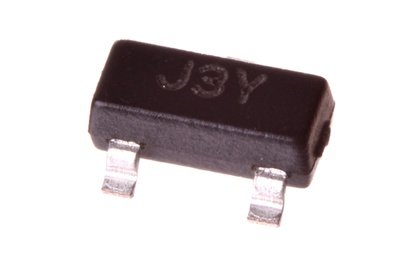
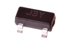

SMD (SOT-23) 500 mA NPN Transistor - TNS25D2

Summary
Name: SMD (SOT-23) 500 mA NPN Transistor
ID: TRNN-SO23-X-A05D-02
Hex ID: TNS25D2
WebPage: https://github.com/oomlout/oomlout-OOMP/wiki/TRNN-SO23-X-A05D-02
Short URL: http://oom.lt/TNS25D2
Revision History: https://github.com/oomlout/oomlout-OOMP/blob/master/parts/TRNN-SO23-X-A05D-02/
| Type |
Size |
Color |
Description |
Index |
TRNN
NPN Transistor |
SO23
SMD (SOT-23) |
X
|
A05D
500 mA |
02
|
Images


About
This part is awaiting a description.
Specifications
| Info |
Value |
| Type |
NPN Transistor |
| Size |
SMD (SOT-23) |
| Description |
500 mA |
| Package Marking |
J3Y |
| Number of Pins |
3 |
Extra Details
Spotted a mistake, want to add more? Let us know oomp@oomlout.com
All images and resources are licensed [CC BY-SA] unless otherwise stated (ie. the datasheets)